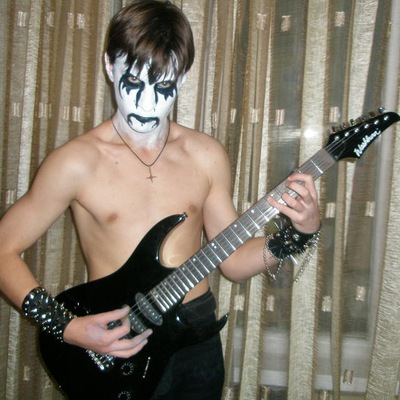
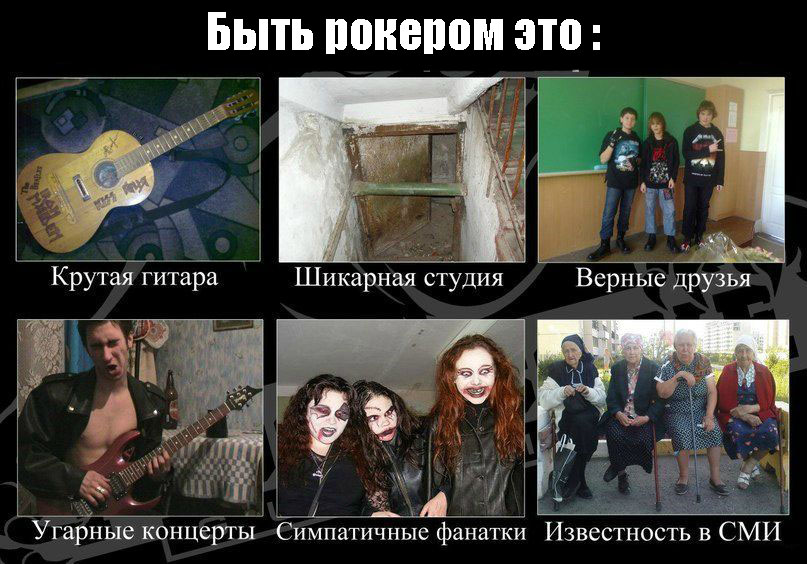

Даешь РОК !!! Хеви металл !!!
ПРИВЕТ ВСЕМ ! Даёшь РОК !!!
Я рокер, мне нравится РОК, потому что ХЕВИ МЕТАЛЛ. Даёшь ХЕВИ МЕТАЛЛ !!!
Сейчас играет СКАРПИОНС, очень мне нравится группа СКАРПИОНС . ДАЕШЬ РОК ! Пока всем рокерам.
Наш сайт про рокеров и всё, что связано с ними
Добро пожаловать на сайт для настоящих рокеров, а если ты не рокер то тоже пи*ды получишь. Шучу )) Если ты не рокер, то ещё успеешь стать рокером, как я. Запомни три простых правила как стать НАСТОЯЩИМ РОКЕРОМ:
- Всегда слушай ТОЛЬКО РОК
- Бей рэперов
- Ненавидь попсу
Почему нужно быть рокером
Ты спросишь: "Зачем мне вообще становиться рокером?" Всё очень просто: рок ... Рок - это сила! Все рокеры начитаны и высокоинтеллектульно развиты, потому что рок по достоинству могут оценить только люди с высоким интеллектом. Рок приведет тебя к успеху. Помни лишь одно: всегда СЛУШАЙ РОК и ТОЛЬКО РОК !!!
Самые распространённые стереотипы про рокеров
Рокером быть не легко. Будь готов к тому, что тебя не поймут. Вот что могут про тебя сказать другие люди (рэперы и попсятники):
- ты сатанист
- ты гей
- ты оба пункта вместе
Не расстраивайся, просто они чувствуют твое превосходство над собой и пытаются нанести тебе психический урон, чтобы пошатнуть твою уверенность и перенять инициативу на себя. Но ты не теряйся,- говори прямо в лицо: "Я ГЕЙ И СОТОНИСТ. ДАЕШЬ РОК ! ХЕВИ МЕТАЛЛ !!!"
Что ты найдёшь на этом сайте
Всё-всё про рок и рокеров: новости про рок, музыку ТОЛЬКО РОК , обучающие видео как быть рокером, статьи про рок и рокеров , аккорды на рок-песни , шутки за 300 про рокеров и рэперов . Сотона могила хеви метал рок . Даёшь рок ! Хеви металл !
